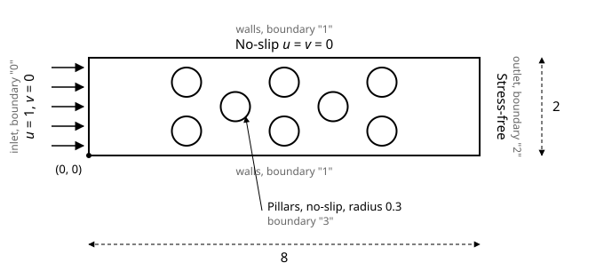
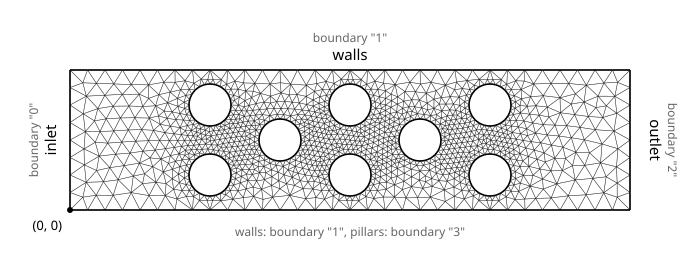

Overview
Creeping flow through a 2D pillar array.
In this tutorial, we solve the steady Stokes flow equations in a channel with a staggered array of round pillars, a layout common in microfluidic devices and in models of flow through porous media. The geometry is meshed with Gmsh into quadratic triangles, and FEAScript solves the velocity and pressure with Taylor-Hood (P2-P1) mixed elements.
The steady Stokes equations for an incompressible Newtonian fluid with no body forces are: \(\nabla \cdot \mathbf{u} = 0\) and \(-\mu \nabla^{2} \mathbf{u} + \nabla p = \mathbf{0}\), where \(\mathbf{u} = (u,v)\) is the velocity vector, \(p\) is the pressure and \(\mu\) is the dynamic viscosity. They hold when the Reynolds number is small, so that viscous forces dominate inertia, as in most microchannels. We set \(\mu = 1\) and work in nondimensional units.

Schematic of the pillar array: a channel 8 long and 2 high with eight pillars of radius 0.3, a uniform inflow at the left, no-slip walls and pillars, and a stress-free outlet at the right.
The fluid enters at the left with a uniform velocity \(u = 1, v = 0\) and leaves at the right, where the traction is zero (stress-free outlet). The velocity is zero on the channel walls and on the pillars (no-slip). The pillars are placed in five columns at \(x = 2\) to \(6\), alternating two pillars at \(y = 0.5\) and \(1.5\) and one pillar at \(y = 1\), so the fluid has to weave between them.
As in the lid-driven cavity tutorial, FEAScript satisfies the Ladyzhenskaya–Babuška–Brezzi (LBB) inf-sup condition with Taylor-Hood elements. On triangles, the velocity uses 6-node quadratic (P2) elements and the pressure 3-node linear (P1) elements on the corner nodes.
The mesh is generated with Gmsh from the geometry file
pillar.geo. It subtracts the pillars from the channel, finds each boundary by its position, and puts the
boundaries in four physical groups:
// 4. Physical groups: FEAScript keys the boundary conditions by these names
Physical Curve("inlet", 1) = {inlet()}; // FEAScript boundary "inlet"
Physical Curve("walls", 2) = {bottom(), top()}; // FEAScript boundary "walls"
Physical Curve("outlet", 3) = {outlet()}; // FEAScript boundary "outlet"
Physical Curve("pillars", 4) = {pillars()}; // FEAScript boundary "pillars"
Physical Surface("domain", 5) = {10}; // Domain
// 5. Mesh: quadratic triangles (P2), refined on the pillars
MeshSize{ PointsOf{ Surface{10}; } } = lc;
MeshSize{ PointsOf{ Curve{pillars()}; } } = lp;
Mesh.MeshSizeFromCurvature = 12; // Elements per 2π of curvature on the pillars
Mesh.ElementOrder = 2;
Run gmsh pillar.geo -2 -format msh41 -o pillar_triang_quadratic.msh to write the mesh in the
.msh version 4.1 format that FEAScript reads, or download
pillar_triang_quadratic.msh. FEAScript keys each boundary by the name of its physical group, and these names are used in the
boundary conditions below.

Mesh of the pillar array: 2,214 quadratic triangles (4,693 nodes) from Gmsh, with element size 0.25 in the channel and 0.08 on the pillars, and the boundary keys
The model runs in a simple HTML page. First, load Plotly in the <head>:
<head> <!-- ...head region... --> <script src="https://cdnjs.cloudflare.com/ajax/libs/plotly.js/2.35.3/plotly.min.js"></script> <!-- ...rest of head region... --> </head>
Then fetch the mesh, define the model and solve. The mesh file must be served from the same site as the page (or from a server that allows cross-origin requests):
<body>
<!-- ...body region... -->
<script type="module">
import {
FEAScriptModel,
importGmshMesh,
plotInterpolatedSolution,
version,
} from "https://core.feascript.com/dist/feascript.esm.js";
window.addEventListener("DOMContentLoaded", async () => {
console.log("FEAScript version:", version);
// 1. Create the model and select the physics
const model = new FEAScriptModel();
model.setModelConfig("creepingFlow", {
solver: { method: "lusolve" },
coefficientFunctions: {
viscosity: 1, // μ
},
});
// 2. Load the Gmsh mesh (P2 triangles)
const response = await fetch("./pillar_triang_quadratic.msh");
const meshFile = new File([await response.text()], "pillar_triang_quadratic.msh");
model.setMesh(await importGmshMesh(meshFile));
// 3. Apply the boundary conditions, keyed by the names of the Gmsh physical groups
model.addBoundaryCondition("inlet", { type: "constantVelocity", u: 1, v: 0 }); // Inlet
model.addBoundaryCondition("walls", { type: "constantVelocity", u: 0, v: 0 }); // Channel walls
model.addBoundaryCondition("outlet", { type: "stressFree" }); // Outlet
model.addBoundaryCondition("pillars", { type: "constantVelocity", u: 0, v: 0 }); // Pillars
// 4. Solve
const result = model.solve();
// 5. Plot the results
plotInterpolatedSolution(model, result, "contour", "velocityMagnitudeCanvas");
plotInterpolatedSolution(model, result, "contour", "uVelocityCanvas", { field: "u" });
plotInterpolatedSolution(model, result, "contour", "vVelocityCanvas", { field: "v" });
plotInterpolatedSolution(model, result, "contour", "pressureCanvas", { field: "p" });
});
</script>
<!-- ...rest of body region... -->
</body>
The "stressFree" condition at the outlet is the natural boundary condition of the
formulation, so it adds nothing to the system; it is listed so that every boundary has a
condition. Because the outlet is open, the pressure level is fixed by the outlet and no pressure
node needs to be pinned. plotInterpolatedSolution evaluates the quadratic shape
functions inside each triangle, so the plots show the curved contours of the P2 solution. Add
the containers where the plots will render:
<body> <!-- ...body region... --> <div id="velocityMagnitudeCanvas"></div> <div id="uVelocityCanvas"></div> <div id="vVelocityCanvas"></div> <div id="pressureCanvas"></div> <!-- ...rest of body region... --> </body>
Below are the 2D contour plots of the velocity magnitude \(|\mathbf{u}| = \sqrt{u^2+v^2}\), the two velocity components and the pressure, computed in your browser when the page loads. A Node.js version of this tutorial, which also prints the flow rates, is in the example directory.
Velocity magnitude
Horizontal velocity (\(u\))
Vertical velocity (\(v\))
Pressure (\(p\))
The flow accelerates through the gaps between the pillars. The fastest jets, with a velocity of about 5.2 (five times the inflow), pass through the 0.4-wide gaps between the paired pillars at \(x = 2\), \(4\) and \(6\). The vertical velocity changes sign from one column to the next as the flow weaves around the pillars. The pressure falls from about 545 near the inlet to zero at the outlet, and almost all of this drop is across the pillars: this is the resistance of the array, the quantity a microfluidic designer would size a pump for. With \(\mu = 1\) and an inflow velocity of 1, the pressure is in units of \(\mu U / \ell\), with \(\ell\) the length unit of the geometry.
There is no analytical solution for this geometry, but two checks show whether the result is sound:
- Mass conservation. The flow rate through the outlet should equal the flow rate through the inlet. Summed from the boundary nodes, they are 1.875 and 1.909, within 2%. Taylor-Hood elements conserve mass only in the weak (integral) sense, so a small difference is expected, and it shrinks as the mesh is refined. The inlet rate is below 2 because the corner nodes belong to the no-slip walls.
-
Mesh convergence. A finer mesh (element size 0.15 in the channel and 0.05 on
the pillars, 11,265 nodes) raises the largest velocity from 5.18 to 5.28, a change of 2%.
Refine the mesh in
pillar.geoto see how the result changes.
Stay in the loop
Join the mailing list.
Receive new tutorials, project updates and news.